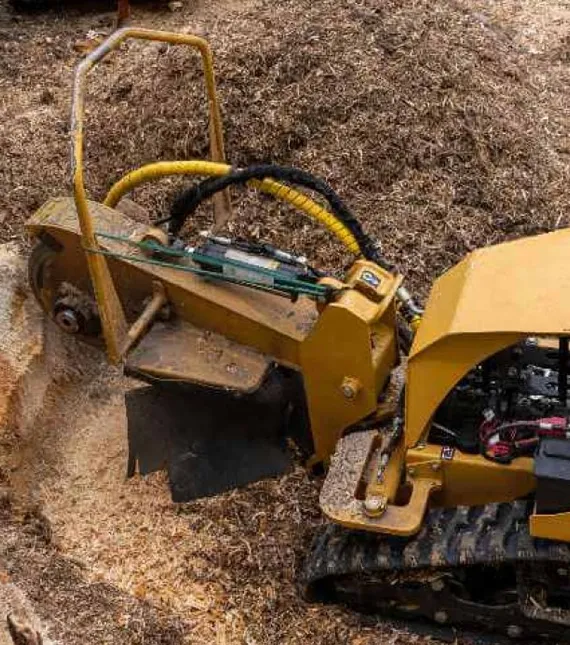
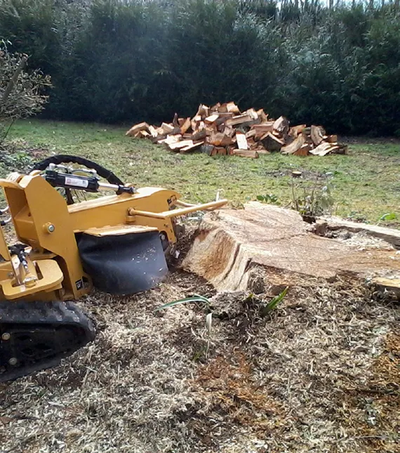

Lagrene Paysagiste 59 : vos as de l’enlèvement de souches d’arbres et haies à Lille 59000
Dessouchage arbre et haie à Lille
Vous cherchez à libérer votre espace extérieur des restes encombrants d’arbres et de haies à Lille ? Faites appel à Lagrene, véritable super-héros du dessouchage ! Leur équipe spécialisée déploie une expertise inégalée pour éliminer ces souches gênantes, transformant votre jardin en un lieu dégagé et prêt à accueillir de nouvelles idées. Terminées les batailles avec les racines rebelles et les soucis pour aménager votre terrain ! Lagrene prend en charge cette mission délicate avec précision et efficacité, offrant une solution professionnelle pour rendre votre espace extérieur à nouveau exploitable et esthétiquement plaisant. Avec Lagrene, la métamorphose de votre jardin est assurée, vous laissant profiter pleinement de votre espace extérieur sans aucune trace des souches qui entravaient votre vision.
Notre savoir-faire
Lagrene, le génie de l’élimination de souche
Vous souhaitez voir ces souches gênantes disparaître de votre jardin comme par enchantement ? Laissez Lagrene vous étonner : c’est un peu le David Copperfield du dessouchage à Lille ! Leur équipe talentueuse transforme l’enlèvement de souches en un véritable tour de magie. Il vous suffit de demander votre devis pour que ces souches embêtantes disparaissent, laissant place à un espace extérieur libéré de tout encombrement. Comme par magie, Lagrene fait disparaître les tracas liés aux souches, offrant une solution claire et efficace pour que vous puissiez réinventer votre jardin sans contraintes. Avec eux, votre jardin redevient une toile vierge, prête à être redessinée selon vos désirs, sans la moindre trace de ces anciennes souches qui faisaient obstacle à votre projet.

Devis dessouchage d’arbre et haie : la formule magique à Lille
Fermez les yeux un instant : Lagrene débarque à Lille comme un magicien avec sa baguette enchantée pour effacer ces souches d’arbre et de haie. Leur équipe, véritable magicienne du dessouchage, opère comme par enchantement pour libérer votre jardin de ces vestiges gênants. Ils vous présentent un devis transparent et détaillé, sans aucune surprise cachée, pour que votre espace extérieur retrouve sa splendeur initiale. Grâce à Lagrene, votre jardin redevient un terrain d’opportunités sans la moindre trace de ces anciennes souches. Leur approche professionnelle et leur engagement à offrir un service impeccable vous assurent que votre jardin redeviendra un espace exploitable, prêt à accueillir de nouveaux projets et à refléter vos idées les plus audacieuses.
Dessouchage de thuya avec le pro des racines rebelles
Vos souches de thuya font de la résistance dans votre jardin à Lille ? Lagrene se pose en maître pour apprivoiser ces racines rebelles. Leur équipe d’experts du dessouchage se charge de dompter ces souches tenaces, vous libérant ainsi d’un espace entravé. Lagrene ne fait pas dans la dentelle : ils s’attaquent aux souches de thuya avec assurance et expertise, laissant votre terrain aussi dégagé que le ciel après l’orage. Avec leur savoir-faire et leur détermination, Lagrene transforme les zones encombrées en espaces prêts à être réinventés. Grâce à leur intervention, ces souches têtues ne sont plus qu’un lointain souvenir, permettant à votre jardin de retrouver sa liberté et son potentiel d’aménagement.

Votre meilleure solution anti-souche
Lagrene, c’est comme une troupe de chasseurs de souches déployée à Lille ! Leur expertise fait des merveilles pour éliminer tous ces restes d’arbres et de haies qui encombrent votre jardin. Leur équipe aguerrie agit comme une véritable force de la nature pour que vous puissiez repartir à zéro dans votre espace extérieur. Avec leur savoir-faire et leur dévouement, Lagrene efface toute trace des anciennes souches, permettant à votre jardin de retrouver son aspect initial, prêt à être réimaginé. Leur intervention méticuleuse et professionnelle offre une toile vierge pour que vous puissiez réinventer votre espace extérieur, sans aucun encombrement ni obstacle à la réalisation de vos nouveaux projets.
Rognage de souche efficace, armé d’un bagage technique impressionnant
Lagrene, ce sont les as du rognage de souche à Lille ! Armés d’un bagage technique impressionnant, ils effacent toute trace de souche de votre terrain. Leur équipe experte manie les outils avec précision pour broyer et éliminer les souches de manière efficace et méticuleuse. Résultat : un terrain lisse et dégagé, prêt à accueillir de nouvelles aventures vertes. Grâce à leur expertise pointue dans le rognage de souche, Lagrene offre un service professionnel et complet, laissant derrière eux un espace extérieur propre et prêt à être exploité sans aucune gêne ni obstacle. Vous avez certaines souches que vous souhaitez dégager de votre jardin ? Vous savez maintenant qui contacter pour s’en débarrasser.
Demander un devis gratuit
Nos autres services